Lugnano in Teverina · Umbria
Vacanze tra vigneti e uliveti nel cuore verde d'Italia: piscina panoramica, tramonti sulla valle del Tevere e i nostri vini "30" da degustare in cantina. A un'ora da Roma.
La nostra storia
Mariabarbara Conti, agronoma specializzata in enologia, ha realizzato con l'Azienda Agricola Trenta Querce il suo desiderio di vivere e lavorare a contatto con la natura. L'azienda produce vino, olio e frutta in un territorio che gli Etruschi e i Romani scelsero più di duemila anni fa per coltivare la terra — e per vivere, proprio come voi, una vacanza rilassante.
Rispetto della tradizione del luogo, con tutte le comodità della vita del nostro tempo. Mariabarbara Conti — titolare, agronoma ed enologa
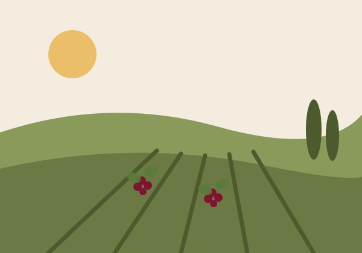
L'agriturismo
Un antico casale ristrutturato, in affitto a gruppi o famiglie fino a 10–12 persone. Cinque alloggi con ingresso indipendente, bagno privato e Wi-Fi, pavimenti in cotto umbro e stanze luminose e panoramiche.
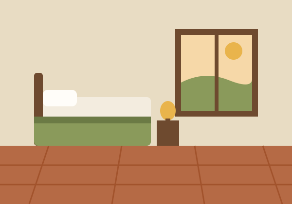
Relax davanti a meravigliosi tramonti sulla vallata.
Forno 90 cm, 5 fuochi, lavastoviglie, microonde e frigorifero.
E veranda estiva sulla vallata, con ampia area barbecue.
Attrezzato, al centro dell'azienda, con altalena e gazebo.
Escursioni su sentieri segnalati nei dintorni dell'agriturismo.
Pranzi e cene esclusive e personalizzate per gli ospiti.
Connessione wireless in tutti gli alloggi.
Il vostro cane è il benvenuto in azienda.
Listino settimanale
Il casale si affitta per intero: 5 alloggi indipendenti, fino a 12 ospiti.
Bassa stagione
periodi restanti
1.800 €
a settimana
Alta stagione
3 lug – 28 ago
2.700 €
a settimana
Media stagione
5 giu – 2 lug · 28 ago – 18 set
2.450 €
a settimana
L'azienda vitivinicola
Un solo vitigno, il Merlot, in tre interpretazioni. Raccolta a mano, vinificazione a temperatura controllata, nessun insetticida e nessun diserbo: solo rame e zolfo in vigna.
Quando Mariabarbara Conti acquistò questa terra nel 2004, aveva trent'anni — e trenta querce l'accoglievano all'ingresso della proprietà. Da quel doppio "30" nascono il nome dell'azienda e l'etichetta dei suoi vini.
Prima di diventare vignaiola in proprio, Mariabarbara ha lavorato con alcune delle realtà più prestigiose del centro Italia: Trappolini, Avignonesi e cinque anni come direttrice tecnica al Castello della Sala di Antinori.
Dai suoli argillosi ricchi di minerali e fossili marini, tre cloni diversi di Merlot danno vita — dallo stesso vigneto — a uno spumante metodo classico, un rosato e un rosso da invecchiamento.
12
ettari di tenuta
3
ha di vigneto
350
m s.l.m.
3
cloni di Merlot
~6.000
bottiglie l'anno
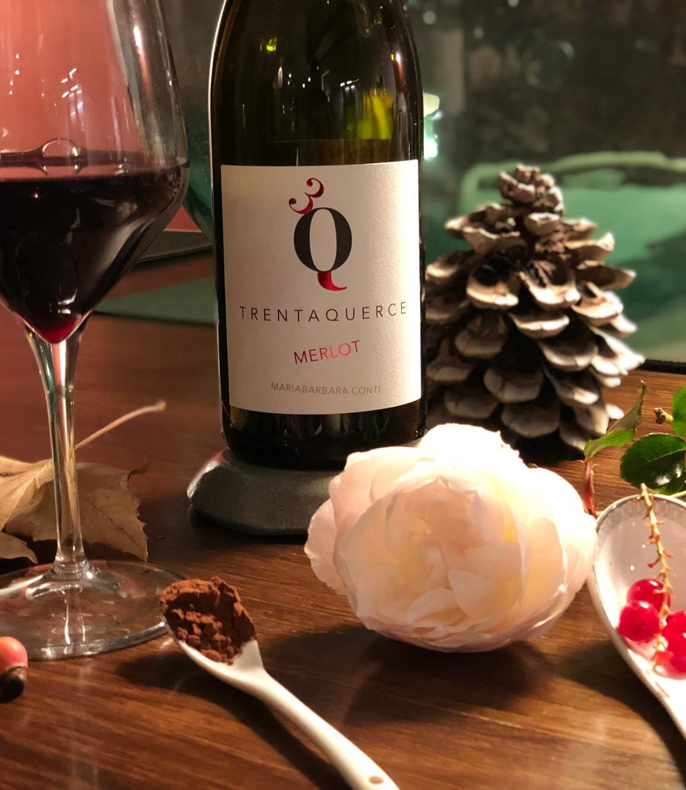
Rosso · barrique
Macerazione in acciaio, affinamento parziale in barrique di rovere francese. Ottimo con carni rosse, selvaggina e formaggi stagionati.
Scopri e ordina →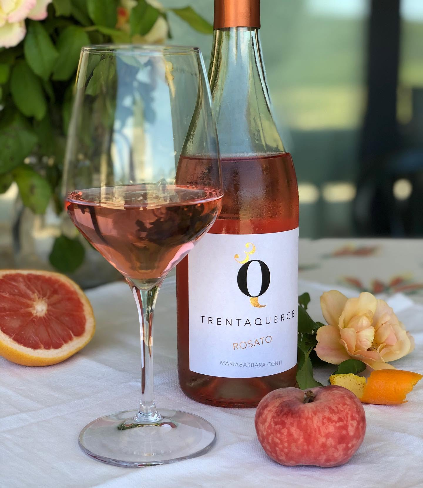
100% Merlot
Pressatura soffice e fermentazione sotto i 18 °C. Perfetto come aperitivo o con i freschi pasti estivi.
Scopri e ordina →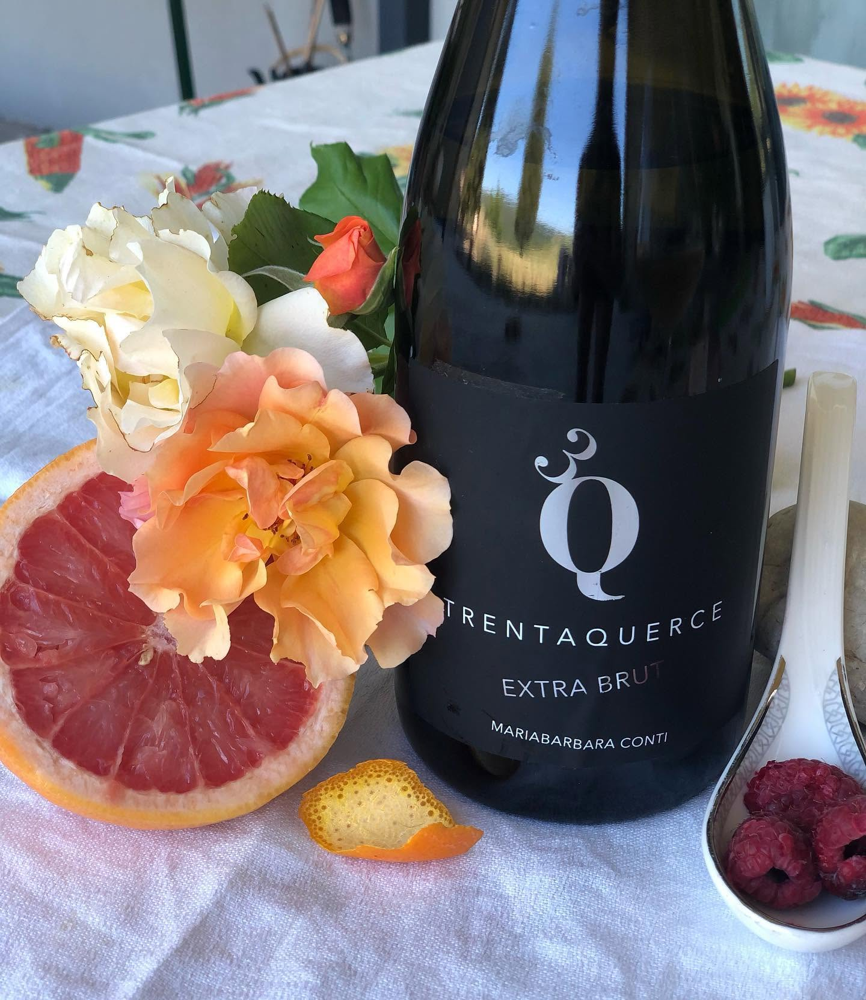
Spumante · 18 mesi sui lieviti
100% Merlot da 0,3 ettari. Presa di spuma a marzo, sboccatura dopo circa 18 mesi sui lieviti.
Scopri e ordina →Menzione per l'interpretazione dei valori organolettici, territoriali e ambientali.
Punteggio massimo tra i vini selezionati nella guida di Carlo Zucchetti.
Menzione nella guida di Castagno, Gravina e Rizzari dedicata ai vignaioli appassionati.
Acquisto diretto su appuntamento, con visita e degustazione. Tel. 339 765 3710 o info@trentaquerce.it.
I vini "30" sono selezionati da enoteche online specializzate in vini naturali e biologici, in Italia e all'estero.
Spedizioni in Italia e nel mondo. Confezioni regalo artigianali con prodotti di aziende locali selezionate.
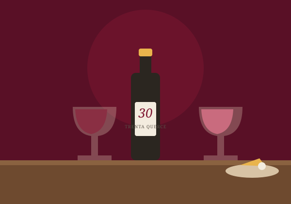
Visite e degustazioni
Su prenotazione è possibile visitare i vigneti e la cantina aziendale. Mariabarbara vi illustrerà la filosofia, i metodi di coltivazione e le motivazioni alla base dei vini aziendali. Alla visita segue la degustazione, accompagnata da assaggi di prodotti locali e aziendali.
I vini si possono acquistare direttamente in azienda, con spedizioni in Italia e nel mondo e confezioni regalo artigianali.
Dicono di noi
I tramonti dalla piscina
Gli ospiti raccontano vedute mozzafiato da ogni finestra e serate indimenticabili in piscina, affacciati sulla valle del Tevere.
L'ospitalità di Mariabarbara
Un'accoglienza calorosa e competente: la padrona di casa è enologa e i suoi vini e prodotti locali conquistano tutti.
La base perfetta per l'Umbria
Orvieto, Amelia, Narni, le terme e persino Roma in giornata: una posizione ideale per esplorare il centro Italia.
Galleria
Illustrazioni segnaposto — da sostituire con le fotografie professionali della struttura.
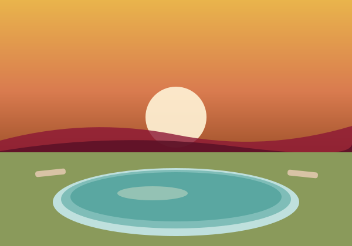
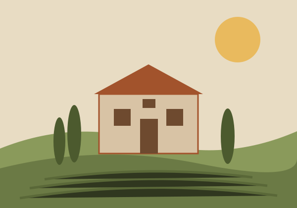
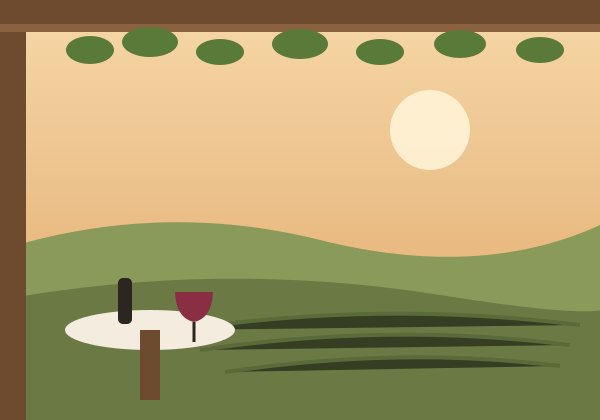
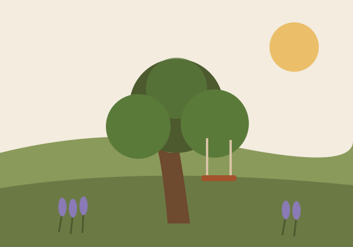
Dove siamo · Come arrivare
Su una collina panoramica tra i boschi, i vigneti e gli uliveti della bassa valle del Tevere, dove Umbria, Lazio e Toscana si incontrano. A pochi passi, i resti della Villa romana di Poggio Gramignano e il borgo di Lugnano, l'antico Lucus Jani.
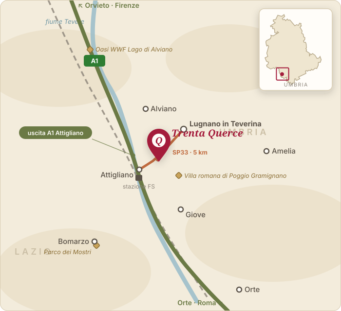
Autostrada A1 Roma–Firenze, uscita Attigliano, poi Strada Provinciale 33 verso Lugnano per 5 km: il cartello per l'agriturismo è sulla sinistra.
Navigatore: "Via della Barca" · N 42°33.030' · E 012°18.530'Stazione di Attigliano-Bomarzo a 5 km, sulla linea Firenze–Roma. Da Roma circa 50 minuti: perfetto anche per una gita nella capitale senza auto.
Roma Fiumicino a circa 110 km (poi treno o auto a noleggio) oppure Perugia "San Francesco d'Assisi" a circa 65 km.
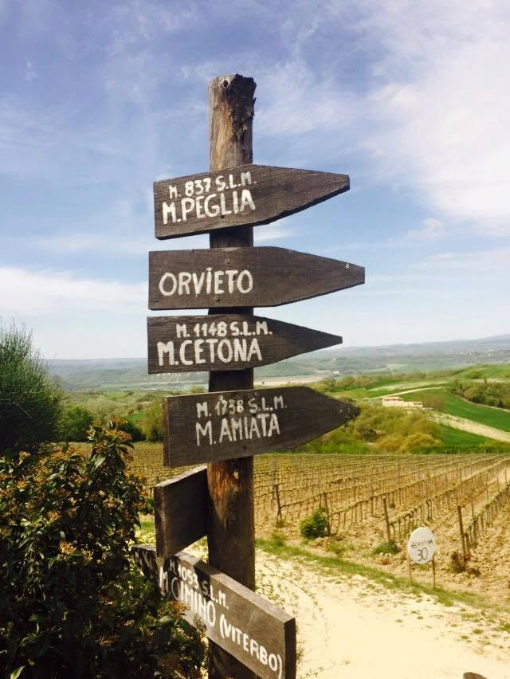
4,5 km
Lugnano in Teverina
35 km
Orvieto
50 km
Lago di Bolsena
~1 h
Roma (in treno da Attigliano)
Contatti